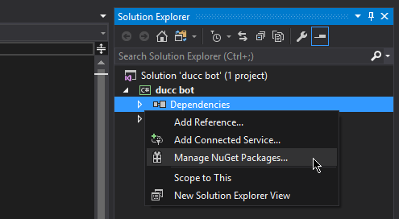

Discord.Net Installation
Discord.Net is distributed through the NuGet package manager; the most recommended way for you to install this library. Alternatively, you may also compile this library yourself should you so desire.
Supported Platforms
Discord.Net targets .NET 6.0 and .NET 5.0, but is also available on older versions, like .NET Standard and .NET Core; this still means that creating applications using the latest version of .NET (6.0) is most recommended. If you are bound by Windows-specific APIs or other limitations, you may also consider targeting .NET Framework 4.6.1 or higher.
Warning
Using this library with Mono is not supported until further notice. It is known to have issues with the library's WebSockets implementation and may crash the application upon startup.
Installing
Release builds of Discord.Net will be published to the official NuGet feed.
Experimental/Development
Development builds of Discord.Net will be published to our MyGet feed. The MyGet feed can be used to run the latest dev branch builds. It is not advised to use MyGet packages in a production environment, as changes may be made that negatively affect certain library functions.
Labs
This exterior branch of Discord.Net has been deprecated and is no longer supported. If you have used Discord.Net-Labs in the past, you are advised to update to the latest version of Discord.Net. All features in Labs are implemented in the main repository.
Create a new solution for your bot
In the Solution Explorer, find the "Dependencies" element under your bot's project
Right click on "Dependencies", and select "Manage NuGet packages"

In the "Browse" tab, search for
Discord.NetInstall the
Discord.Netpackage


Compiling from Source
In order to compile Discord.Net, you will need the following:
Using Visual Studio
- Visual Studio 2019 or later.
- .NET 5 SDK
The .NET 5 workload is required during Visual Studio installation.
Using Command Line
Additional Information
Installing on Unsupported WebSocket Platform
When running any Discord.Net-powered bot on an older operating system (e.g. Windows 7) that does not natively support WebSocket, you may encounter a PlatformNotSupportedException upon connecting.
You may resolve this by either targeting .NET Core 2.1 or higher, or by installing one or more custom packages as listed below.
- Download the latest [.NET Core SDK].
- Create or move your existing project to use .NET Core.
- Modify your
<TargetFramework>tag to at leastnetcoreapp2.1, or by adding the--framework netcoreapp2.1switch when building.